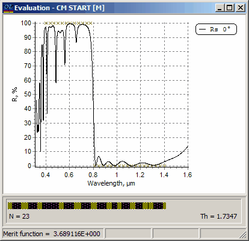
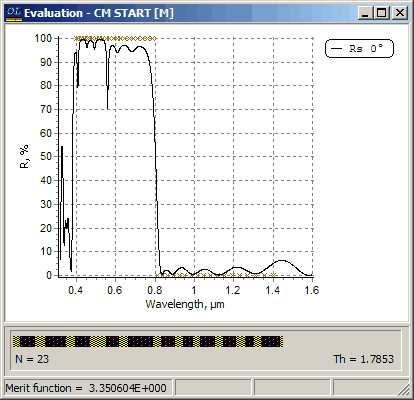

Exercise 9. Design of a cold mirror
Exercise 9. Design of a cold mirror
The objective of this exercise is to obtain a long wave-pass filter with a high reflection zone from 0.4 to 0.8 microns and a the low reflection zone from 0.8 to 1.4 micron, otherwise known as a cold mirror. This exercise is used to demonstrate some basic concepts related to the choice of starting design and target function.
After selection of EX9 Problem directory go to the Options command of the Configuration menu and select microns as Length and Spectral units in the Units tab of the General Configuration dialog. In SF Mode you need to use Import Problem Directory command (File Menu).
Load GLASS substrate, SIO2 and TIO2 layer materials.
First, we will use target function Cm with evenly distributed spectral points. Browse this file located in the Target database and load it to memory.
We shall start refinement with a quarter-wave mirror as a starting design (file QWM). Load it and open the Evaluation window. You can see that the high-reflection zone of our starting design is more narrow than that specified by the target function. Choose the Newton method (Analysis and Synthesis Options dialog) and perform the Refinement procedure. We see that the obtained solution is not good. Note that the refinement is a local optimization technique which converges to the design which is rather close to the starting one. In other words this technique allows finding only local minima of the merit function. In order to obtain better solution with the help of the refinement procedure one needs to use better starting design.
At the moment let us use a combination of three quarter-wave mirrors as a starting design in order to provide high reflectance in the spectral region from 0.4 micron to 0.8 micron. We shall use a combination of three mirrors with control wavelengths of 0.65 micron, 0.55 micron and 0.48 micron. This starting design is specified in the file CM START in the Design database. Load this file and compare starting design reflectance with the target reflectance using the Evaluation window. Perform the Refinement procedure. We get a solution that has lower merit function value comparing to the previous case. The result is a 23-layer design with a merit function value of 3.689116E+000.

In the Evaluation window one can observe multiple ripples of the design reflectance in the high-transmission zone. Quite often such ripples are connected with incorrect choice of a target function. This is just the case in our exercise. The wavelength grid used to specify target function is too sparse. Thus a new target function with more dense wavelength grid should be used. It is also necessary to note that non-uniform wavelength grids are preferable in the case of wideband spectral regions. Such grids should be more dense in a short wavelength region.
OptiLayer has convenient options allowing generation of non-uniform wavelength grids. These options are accessible through the Grid Generator command of the Edit menu. Such target can be found in the Target database. It has a name Cm40log. Open this file using the Edit command and make sure that the wavelength grid is more dense in a short wavelength region. There is one more specific feature of this new target. Note that target tolerances (DRs% column) are set equal to 10 at two wavelength points near the transition zone between high and low reflectance region. Target tolerances are also used to automatically construct OptiLayer merit functions. High tolerances decrease a relative weight of the discrepancy between actual and target reflectances in calculating merit function value.
Load Cm40log target file and CM START starting design to memory.
After running Refinement procedure you will obtain 23-layer design with MF=3.350604E+000. This design is saved in the Design database with the name COLDMIR.
